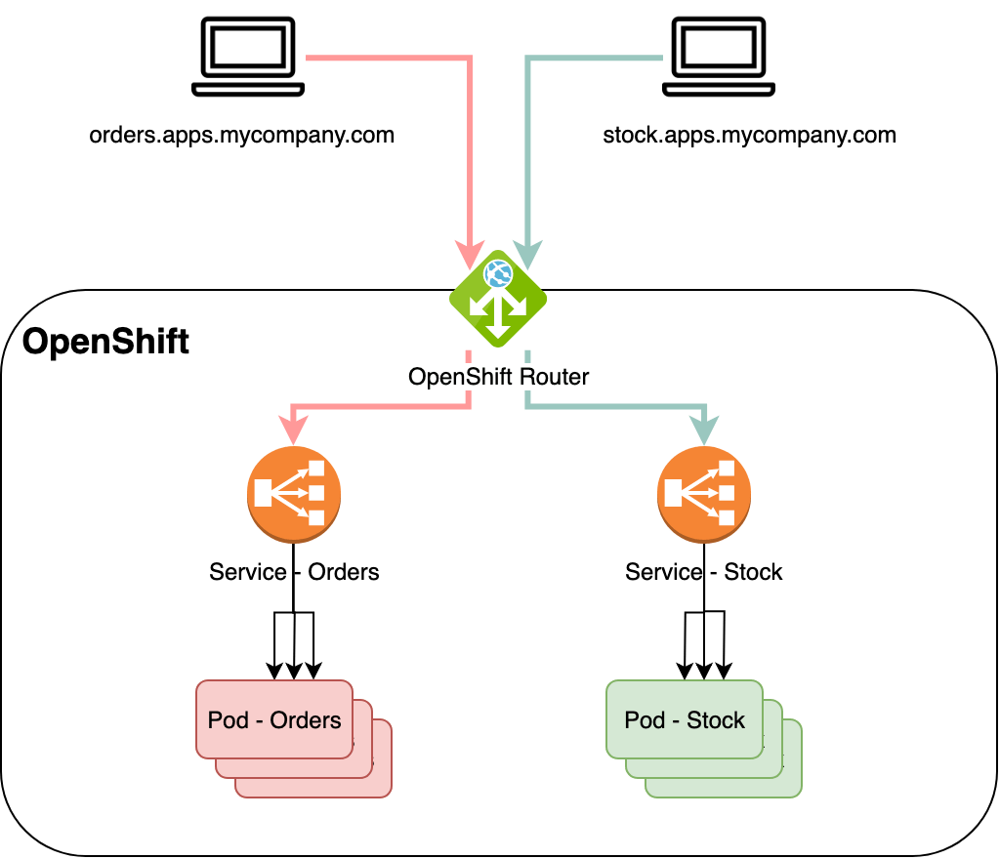

Setting Up Argo CD Port Forwarding in OpenShift

Argo CD is a popular GitOps tool that automates the deployment of applications in Kubernetes environments. In OpenShift, setting up Argo CD requires some specific configurations due to its unique security and networking models. One common requirement is to access the Argo CD UI, which can be done through port forwarding.
In this blog post, we'll guide you through the steps to set up Argo CD port forwarding in OpenShift.
Prerequisites
Before you begin, ensure you have the following:
-
An OpenShift cluster up and running.
-
OpenShift CLI (
oc) installed and configured to interact with your cluster. -
Argo CD installed in your OpenShift cluster.
Step 1: Install Argo CD in OpenShift
If you haven't already installed Argo CD in your OpenShift cluster, you can do so using the following commands:
oc apply -n openshift-gitops -f https://raw.githubusercontent.com/argoproj/argo-cd/stable/manifests/install.yaml
This command installs Argo CD in the openshift-gitops namespace. You can change the namespace if you prefer a different one.
Step 2: Identify the Argo CD Server Service
After the installation, you'll need to identify the service that the Argo CD server is running on. By default, the service is named argocd-server in the namespace where Argo CD was installed.
You can confirm the service name by running:
oc get svc -n openshift-gitops
Look for the argocd-server service in the output.
Step 3: Set Up Port Forwarding
Port forwarding is a way to access the Argo CD UI on your local machine by forwarding a port from your local machine to the service running in the OpenShift cluster.
Run the following command to set up port forwarding:
oc port-forward svc/argocd-server -n openshift-gitops 8080:443
This command forwards port 8080 on your local machine to port 443 on the argocd-server service. You can change the local port (8080) if it’s already in use by another application on your machine.
Step 4: Access the Argo CD UI
Once the port forwarding is set up, you can access the Argo CD UI by opening your web browser and navigating to:
https://localhost:8080
You may encounter a security warning because Argo CD uses a self-signed certificate. You can safely bypass this warning to access the UI.
Step 5: Log In to Argo CD
To log in to Argo CD, you need the initial admin password, which is typically the name of the Argo CD server pod. You can retrieve it using the following command:
oc get pods -n openshift-gitops -l app.kubernetes.io/name=argocd-server -o jsonpath="{.items[0].metadata.name}"
Use this value as the username (admin) and the password when prompted to log in.
Additional Considerations
-
Ingress Setup: For production environments, consider setting up an OpenShift Route to expose the Argo CD service externally rather than using port forwarding. This approach is more suitable for multi-user environments.
-
Authentication: Consider integrating Argo CD with an identity provider (like OAuth or LDAP) available in OpenShift for managing user access.
Conclusion
Port forwarding is a quick and easy way to access the Argo CD UI in an OpenShift environment, especially during initial setup or troubleshooting. While this method is excellent for local development or testing, production environments should use more robust solutions like Ingress or OpenShift Routes.
With these steps, you should now be able to access and manage your applications in OpenShift using Argo CD. Happy GitOps-ing!
Imported from rifaterdemsahin.com · 2025